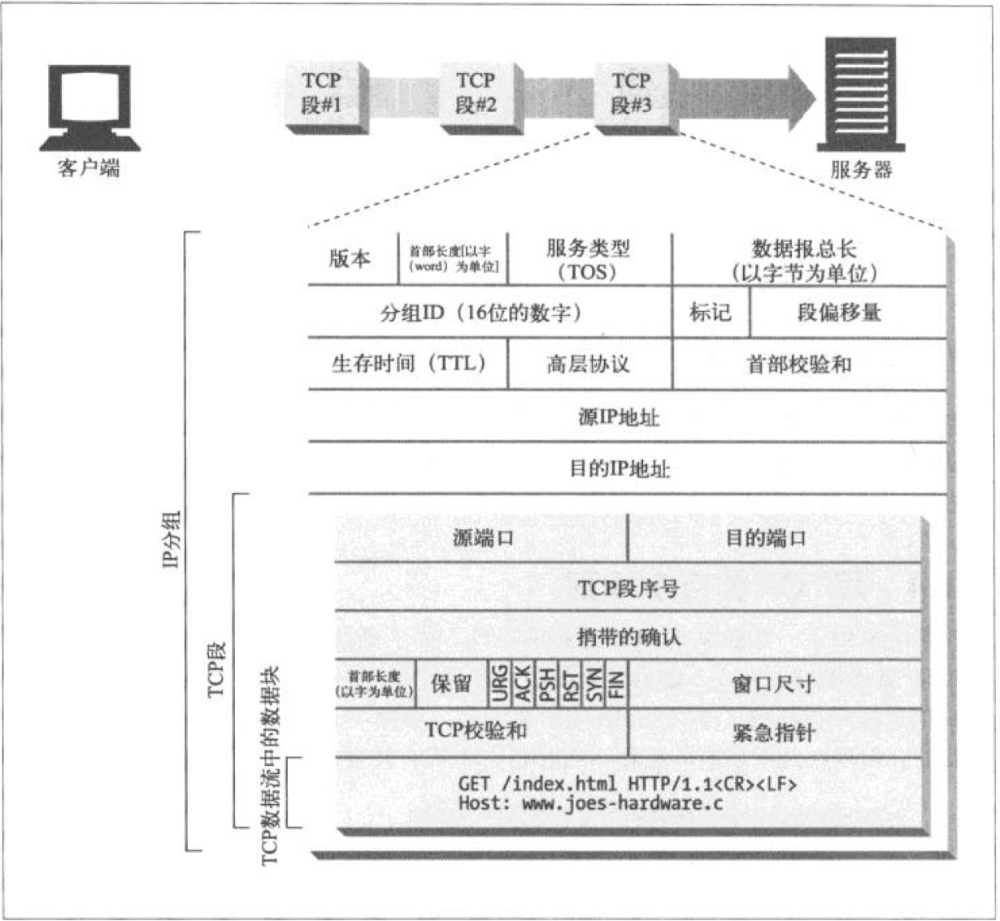
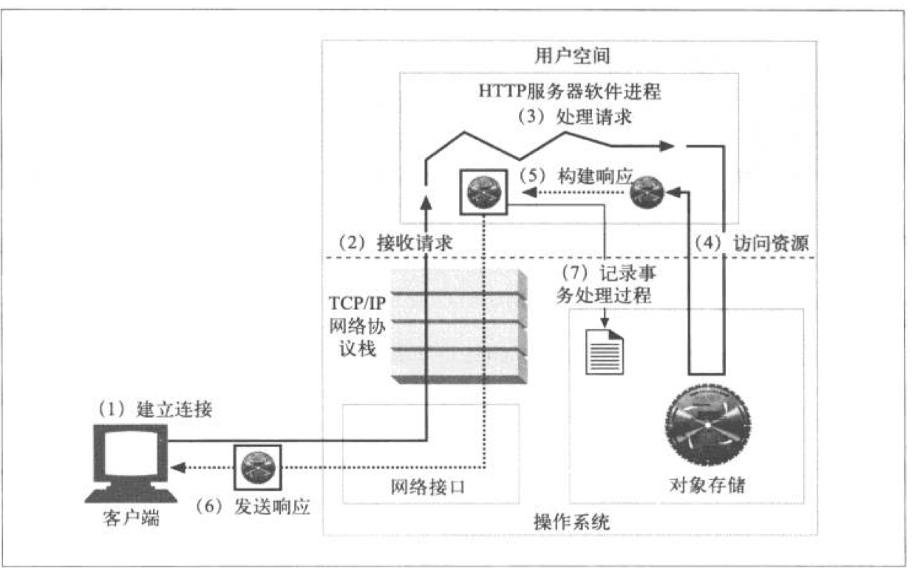
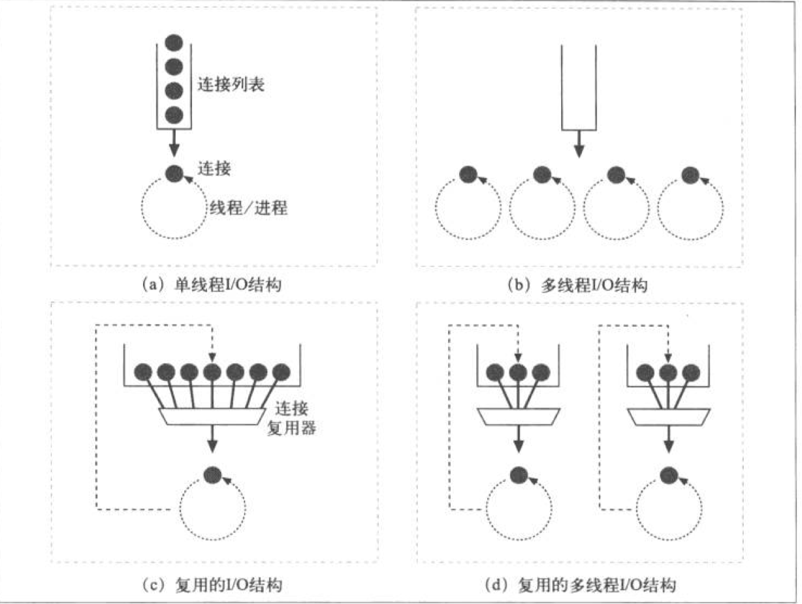
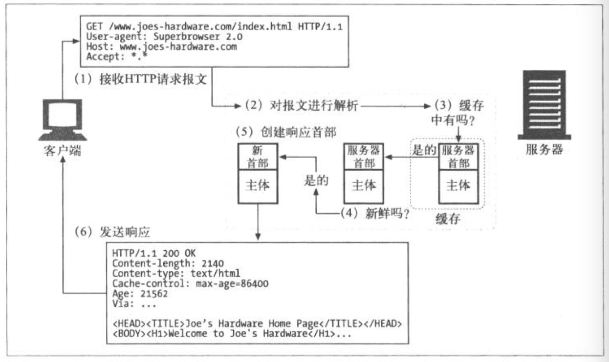
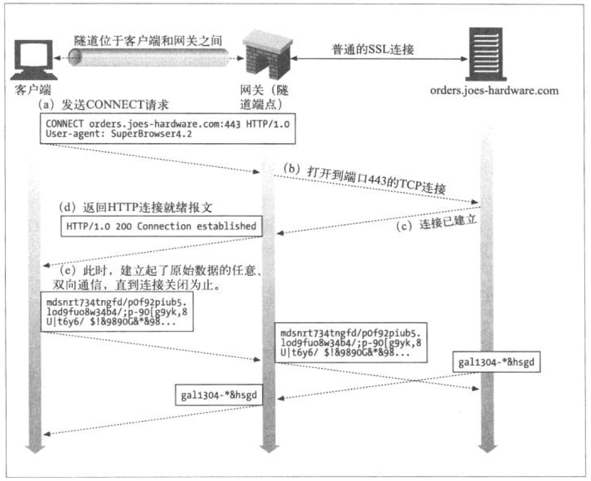
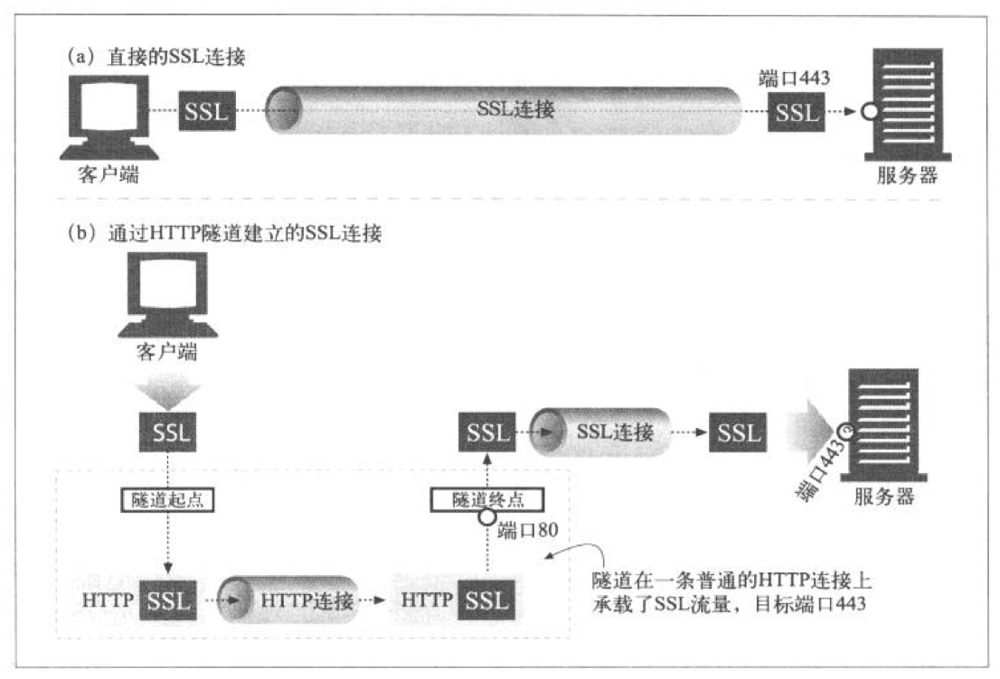

HTTP 权威指南（笔记二）
1、连接管理
1.1 TCP 连接
每个 TCP 段都会由 IP 分组承载，从一个 IP 地址发送到另一个 IP 地址。而每个 IP 分组中都包括：
- 一个 IP 分组首部 （源和目的 IP 地址、长度和其他标记）
- 一个 TCP 段首部 （端口号、控制标记、排序和完整性检查的数值）
- 一个 TCP 数据块

####1.2 对 TCP 性能的考虑
- HTTP 事务的时延。确定 IP 地址和端口号、连接请求、HTTP 请求、HTTP 响应
- 性能聚焦区域。建立握手、慢启动拥塞控制、数据聚集的 Nagle 算法、延迟确认算法、TIME_WAIT 时延和端口耗尽
- 握手时延（三次握手）
- 延迟确认
- 慢启动。用于防止因特网突然过载和拥塞
- Nagle 算法与 TCP_NODELAY。Nagle 算法试图在发送一个分组之前，将大量 TCP 数据绑定在一起。TCP_NODELAY 用于取消 Nagle 算法
- TIME_WAIT 累积与端口耗尽。
####1.3 HTTP 连接的处理
- 首部 connection
- 串行事务处理时延
- 并行连接。总数会被限制，避免影响性能
- 持久连接。便于复用、keep-alive（在首部connection）、哑代理
- 管道化连接
- 正常关闭。全关闭和半关闭
2、 Web 服务器
Web 执行几项任务：
- 建立连接
- 接收请求
- 处理请求
- 访问资源
- 构建响应
- 发送响应
- 记录事务处理过程

####2.1 建立连接
客户端请求一条到 Web 服务器的 TCP 连接时，Web 服务器会建立连接，并解析出IP地址。（对客户端主机名识别、通过 ident 确定客户端用户）
####2.2 接收请求
连接上有数据到达时， Web 服务器会从网络连接中读取数据，并将请求报文中的内容解析出来。
- 单线程 Web 服务器
- 多进程及多线程 Web 服务器
- 复用 I/O 的服务器
- 复用的多线程 Web 服务器

####2.3 处理请求
一旦收到请求，就可以根据方法、资源、首部和可选的主体部分来对请求进行处理。
####2.4 对资源的映射及访问
Web 服务器会将请求报文中的 URI 映射为 Web 服务器上适当的内容或内容生成器，以识别出内容的源头。
- docroot 文档根目录 （虚拟托管 docroot、用户的主目录）
- 目录列表
- 动态内容资源的映射
- 访问控制
####2.5 构建响应
识别出资源后，根据请求方法返回响应报文。如果有响应主体，响应报文包括：MIME 类型的 Content-Type 首部、长度的 Content-Length 首部、主体内容。
- MIME 类型 Web 服务器根据文件扩展名来说明 MIME 类型、魔法分类(搜索匹配)、显示分类（强制配置）、类型协商
- 重定向（3XX） 永久删除的资源、临时删除的资源、URL 增强、负载均衡、服务器关联、规范目录名称
####2.6 发送响应
发送数据面临与接收数据一样的问题，需要注意对持久连接的处理。非持久连接，发送后及时关闭连接；对持久连接，需要正确计算 Content-Length 首部。
####2.7 记录日志
当事务结束时，Web 服务器会在日志文件上添加一个条目，来描述已执行的事务。
3、 代理
Web 代理服务器是网络的中间实体，位于客户端和服务器之间，在各端点之间来回传送 HTTP 报文。既是服务器，也是客户端。使用代理服务器，可以改善安全性，提高性能，节省费用。
####3.1 私有和共享代理
- 公共代理 集中式代理的费效比更高，更容易管理
- 私有代理 不常见、扩展浏览器特性，提高性能
####3.2 代理与网关对比
- 代理是两个或多个相同协议的应用程序
- 网关是两个或多个使用不同协议的端点，相当于“协议转换器”
####3.3 代理的层次结构
层次结构中代理服务器被赋予了父和子的关系，除了静态代理，还有动态代理。（如：负载均衡、地理位置附近的路由、协议/类型路由、基于订购的路由）
####3.4 代理设置
- 手工配置 PAC 文件，计算代理设置
- 预先配置浏览器
- 代理的自动配置
- WPAD 的代理
####3.5 追踪报文
- via 首部字段列出了与报文途经的每个中间节点有关的信息
- via 包含：协议名、协议版本、节点名、节点注释
- trace 方法
4、 缓存
Web 缓存是可以自动保存常见文档副本的 HTTP 设备。有下列优点：
- 减少了冗余的数据传输
- 缓解了网络瓶颈的问题
- 降低了对原始服务器的要求
- 降低了距离时延
####4.1 缓存的拓扑结构
缓存分为私有缓存和公有缓存。私有缓存不需要很大的动力或存储空间，一般浏览器中有内建的私有缓存；公有缓存是特殊的共享代理服务器，接受来自多个用户的访问。
- 代理缓存的层次结构，在较小的缓存中未命中的请求会被导向较大的父缓存，由它来为剩下的那些提供服务。（层级结构）
- 网状缓存、内容路由器以及对等缓存。
####4.2 缓存的处理步骤
- 接收
- 解析
- 查询
- 新鲜度检测。与服务器进行验证
- 创建响应
- 发送
- 日志

####4.3 缓存的文档过期
文档中会加有一个过期日期，若发现日期过期，需要再和服务器进行验证，看是否发生变化。If-Modified-Since：Date 验证；If-None-Match：实体标签再验证；强弱验证。
####4.4 控制缓存的能力
- no-Store 与 no-Cache 响应首部。防止缓存提供未经证实的已缓存对象，
- max-age 响应首部。表示的是从服务器将文档传来之时起，可以认为此文档处于新鲜状态的秒数。
- Expires 响应首部。指定实际的日期而不是秒数。（由于服务器存在时钟不同步，不推荐）
- must-revalidate 响应首部。可以配置缓存，使其提供一些陈旧的对象，以提高性能。
- 试探性过期。LM-Factor 算法根据最后修改日期，设置新鲜度持续时间。
- 使用期和新鲜生存期。
- 缓存与广告之间的矛盾。
5、 网关、隧道及中继
####5.1 网关
网关是资源和应用程序之间的粘合剂，可以进行不同协议之间的装换。可以用一个斜杠来分割客户端和服务端的协议。
####5.2 协议网关
- HTTP/*: 服务器端 Web 网关
- HTTPS/HTTP 服务器端安全网关
- HTTPS/HTTP 客户端安全加速器网关
- 资源网关
####5.3 隧道
Web 隧道允许用户通过 HTTP 连接发送非 HTTP 流量，这些流量可以穿过只允许 Web 流量通过的防火墙。
用 CONNECT 建立 HTTP 隧道

- 数据隧道、定时及连接管理
- SSL 隧道
直接的 SSL 连接和隧道化 SSL 连接的对比

####5.4 中继
HTTP 中继是没有完全遵循 HTTP 规范的简单 HTTP 代理，负责处理 HTTP 中建立连接的部分，然后对字节进行盲转发。